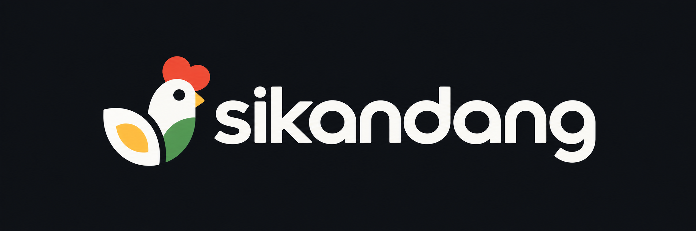
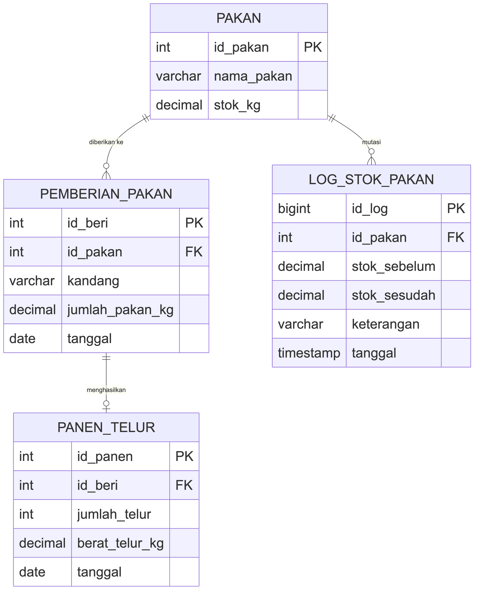
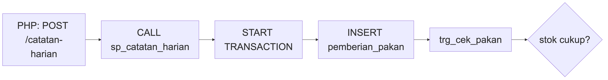
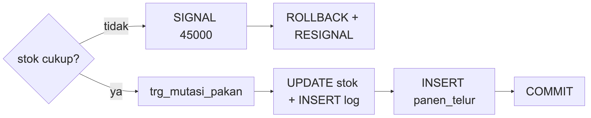

SiKandang
Aplikasi Pencatatan Pemberian Pakan & Panen Telur Berbasis Database Trigger dan Stored Procedure

1. Prinsip Desain & Skema ERD
2. Trigger Validasi & Audit Mutasi
3. Stored Procedure Transaksional
4. Pengujian & Live Demo
Mengapa Logika Stok Ditaruh di Database?
Prinsip Inti SiKandang: Stok pakan tidak pernah diubah langsung oleh kode PHP. Semua validasi dan pemotongan stok hidup di tabel MariaDB melalui Trigger dan Stored Procedure.
Masalah Jika Logika Hanya di Aplikasi (PHP)
- Setiap jalur akses baru (CLI, Postman, skrip impor) harus mengulang validasi stok yang sama.
- Berisiko race condition saat dua pencatatan membaca stok yang sama bersamaan.
- Pencatatan pemberian pakan dan panen telur berisiko tersimpan setengah (data yatim) bila error di tengah proses.
Solusi Arsitektur di SiKandang
-
trg_cek_pakan(BEFORE INSERT): mengunci baris & menolak stok kurang lewatSIGNAL '45000'. -
trg_mutasi_pakan(AFTER INSERT): otomatis memotong stok & menulis audit log. -
sp_catatan_harian: membungkus 2 tabel dalam satu transaksi atomik (COMMIT/ROLLBACK). -
Backend
index.phpcukup meneruskanSQLSTATE '45000'menjadi HTTP 422.
Struktur 4 Tabel InnoDB & Integritas Relasi

| Tabel | Peran Utama |
|---|---|
pakan |
Master pakan & sumber kebenaran stok |
pemberian_pakan |
Pintu masuk tunggal pengurangan stok |
panen_telur |
Hasil panen (1:1 via id_beri UNIQUE) |
log_stok_pakan |
Jejak audit otomatis oleh trigger |
Pertahanan Lapis Pertama (DDL)
-
InnoDB di semua tabel agar Foreign Key dan
ROLLBACKaktif. -
CHECK Constraint:
stok_kg >= 0,jumlah_pakan_kg > 0,jumlah_telur >= 0. -
Relasi 1:1 Ketat:
panen_telur.id_beribertipeUNIQUEagar 1 pemberian tidak bisa dipanen ganda.
trg_cek_pakan — Penjaga Gerbang
Sebelum Tulis
CREATE TRIGGER trg_cek_pakan BEFORE INSERT ON pemberian_pakan FOR EACH ROW BEGIN DECLARE v_stok DECIMAL(10, 2); -- Kunci baris pakan agar transaksi paralel tidak balapan SELECT stok_kg INTO v_stok FROM pakan WHERE id_pakan = NEW.id_pakan FOR UPDATE; IF v_stok IS NULL THEN SIGNAL SQLSTATE '45000' SET MESSAGE_TEXT = 'pakan tidak ditemukan'; ELSEIF NEW.jumlah_pakan_kg > v_stok THEN SIGNAL SQLSTATE '45000' SET MESSAGE_TEXT = 'stok pakan tidak mencukupi'; END IF; END
1. Row-Level Lock (FOR UPDATE)
Mengunci baris pakan terkait
sampai transaksi selesai, mencegah dua permintaan bersamaan
membaca saldo stok yang sama.
2. Error Standar (SQLSTATE '45000')
Menghentikan INSERT sebelum baris
ditulis jika ID pakan invalid atau
jumlah_pakan_kg > v_stok.
3. Jembatan ke PHP (index.php)
Blok catch (PDOException $e)
mengecek kode '45000' lalu
mengembalikan JSON HTTP 422 berisi pesan
asli trigger.
trg_mutasi_pakan — Potong Stok &
Catat Log
CREATE TRIGGER trg_mutasi_pakan AFTER INSERT ON pemberian_pakan FOR EACH ROW BEGIN DECLARE v_sebelum DECIMAL(10, 2); SELECT stok_kg INTO v_sebelum FROM pakan WHERE id_pakan = NEW.id_pakan FOR UPDATE; UPDATE pakan SET stok_kg = v_sebelum - NEW.jumlah_pakan_kg WHERE id_pakan = NEW.id_pakan; INSERT INTO log_stok_pakan ( id_pakan, stok_sebelum, stok_sesudah, keterangan ) VALUES ( NEW.id_pakan, v_sebelum, v_sebelum - NEW.jumlah_pakan_kg, CONCAT('Pemberian #', NEW.id_beri, ' - Kandang', NEW.KANDANG) ); END
Mengapa AFTER INSERT?
-
Berjalan hanya setelah
trg_cek_pakanmeloloskan data. -
Nilai
NEW.id_berisudah terbentuk sehingga bisa dicatat akurat ke kolomketerangan.
Audit Trail Otomatis
Setiap pengurangan stok langsung merekam:
-
stok_sebelum&stok_sesudah - Referensi nomor pemberian & nama kandang
-
Endpoint
GET /riwayat-stokmurni membaca tabel log ini.
sp_catatan_harian — Transaksi Atomik 2
Tabel


CREATE PROCEDURE sp_catatan_harian( IN p_kandang VARCHAR(50), IN p_id_pakan INT, IN p_jumlah_pakan_kg DECIMAL(10,2), IN p_jumlah_telur INT, IN p_berat_telur_kg DECIMAL(10,2), IN p_tanggal DATE ) BEGIN DECLARE v_id_beri INT; DECLARE EXIT HANDLER FOR SQLEXCEPTION BEGIN ROLLBACK; RESIGNAL; END; START TRANSACTION; INSERT INTO pemberian_pakan (id_pakan, KANDANG, jumlah_pakan_kg, tanggal) VALUES (p_id_pakan, p_kandang, p_jumlah_pakan_kg, p_tanggal); SET v_id_beri = LAST_INSERT_ID(); INSERT INTO panen_telur (id_beri, jumlah_telur, berat_telur_kg, tanggal) VALUES (v_id_beri, p_jumlah_telur, p_berat_telur_kg, p_tanggal); COMMIT; END
All-or-Nothing Atomicity
Pemberian pakan dan panen telur wajib sukses bersama. Tidak ada data pemberian tanpa pasangan panennya.
ROLLBACK + RESIGNAL
Jika trg_cek_pakan menolak
insert, seluruh transaksi dibatalkan dan pesan error tetap
diteruskan ke CatatanHarianRepository.
Dipanggil dari PHP (1 Baris)
CALL sp_catatan_harian(:kandang, :id_pakan, ...)
di CatatanHarianRepository.php.
Skenario Uji SQL (05_test.sql) & Evaluasi Desain
5 Skenario Uji (backend/db/05_test.sql)
| # | Skenario | Hasil yang Diharapkan |
|---|---|---|
| 1 | Insert pakan 5 kg (stok cukup) | Stok berkurang & log mutasi tercipta |
| 2 | Insert pakan 999 kg (stok kurang) | Ditolak trigger; stok & tabel tetap utuh |
| 3 | CALL sp_catatan_harian valid |
Pemberian, panen, stok & log sinkron |
| 4 | CALL sp_catatan_harian 9999 kg |
Gagal total; ROLLBACK jaga panen_telur |
| 5 | Query JOIN 3 tabel |
Data laporan konsisten untuk API GET |
Kekuatan Desain Saat Ini
- Validasi & audit trail tidak bisa di-bypass dari luar aplikasi.
-
Aman dari race condition berkat
FOR UPDATE. - Pemisahan tanggung jawab rapi antara validasi format (PHP) dan integritas data (MariaDB).
Catatan Evaluasi & Pengembangan
-
Trigger baru mencakup operasi
INSERTpadapemberian_pakan; belum ada trigger untuk koreksi (UPDATE/DELETE) atau restock otomatis ke log. -
Detail kecil di
trg_mutasi_pakan: string' - Kandang'perlu 1 spasi sebelum nama kandang agar rapi di UI log.
Live Demo: Aplikasi Web & Bukti Anti-Bypass CLI
Demo 1 · Alur Normal
- Stok awal Konsentrat: 100.00 kg.
- Input pemberian 5 kg + panen 120 telur lewat Web UI.
- Buktikan stok jadi 95.00 kg & baris baru muncul otomatis di Riwayat Stok.
Demo 2 · Over-Stok & Rollback
- Input jumlah pakan 999 kg.
- Server balas HTTP 422: "stok pakan tidak mencukupi".
-
Buktikan tabel
panen_telurikut tidak bertambah (atomik).
Demo 3 · Anti-Bypass (CLI)
- Masuk langsung ke MariaDB CLI tanpa lewat PHP.
-
Jalankan
INSERT999 kg kepemberian_pakan. - Database tetap menolak dengan pesan error yang sama.
Tip: Tekan S untuk catatan presenter, O untuk ringkasan slide, F untuk fullscreen.
Buka Aplikasi SiKandang →